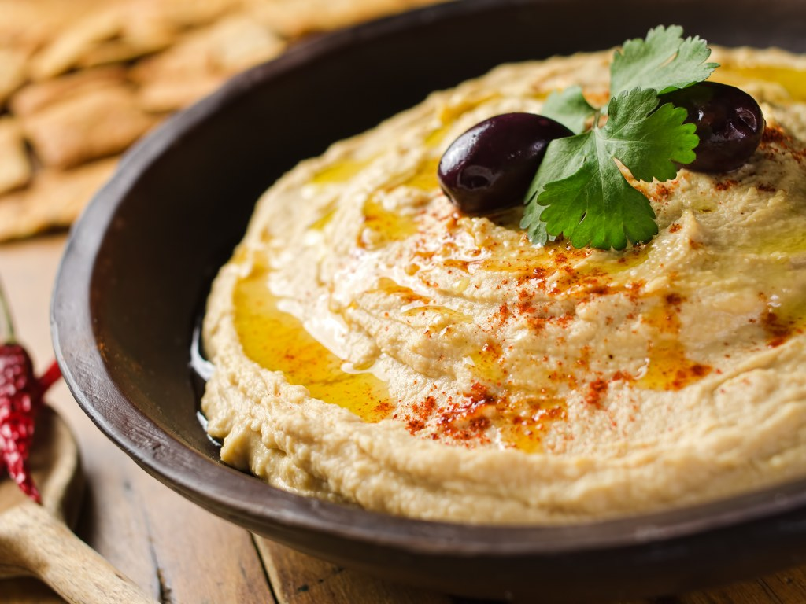

Le houmous est une préparation culinaire du Proche-Orient, composée notamment de purée de pois chiches et de tahini (purée de sésame). Il s'agit d'un plat typique de la cuisine arabe, juive, arménienne et levantine. Cette préparation est d'origine très disputée : au moins sept pays se considèrent comme la mère patrie du houmous et la « guerre du houmous » est régulièrement relayée par la presse. Elle est également exportée pour être consommée en Europe ou en Amérique. C’est parti pour la recette! Source
Pour 4 personnes :
- 500g de pois chiches en boîte
- 125g de tahiné
- 1 citron
- 1 C. à soupe d'huile d'olive
- 1 C. à café de sel
- 150ml d'eau
- cumin
- pimen doux
- 2 gousses d’ail émincées
Instructions
- Dans un blender, verser les pois chiches.
- Rajouter le tahiné, le sel, le citron, l’ail, l’huile d’olive et les épices.
- Mixer.
- Rajouter de leau si trop épais, petit à petit.